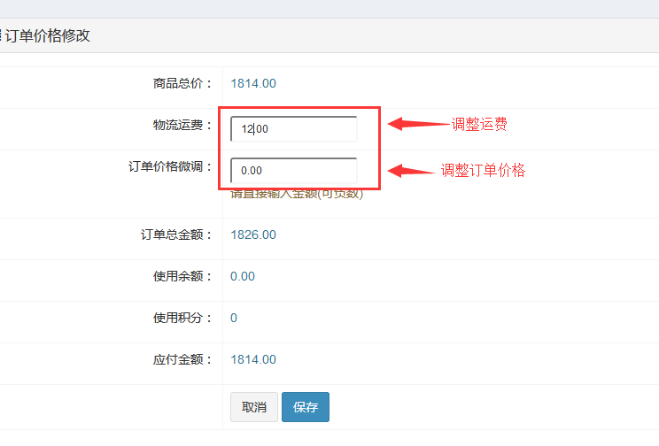

第一步: 用户提交订单
用户在平台提交一个订单并支付完成之后, 在商家后订单列表会生成一般订单记录.
第二步: 价格微调(不需要调整价格的, 可略此步骤)
点击商品上面的"编辑"图标按钮, 可微调订单价格, 平台给出了调整邮费和订单金额的选项

第三步、商家确认订单
商家登录后台, 在订单列表"查看"订单按钮, 确认订单(所有的订单发货之前都需要确认无误之后才可以进行后面的操作)
第四步、发货
在"发货"列表, 选择要发货的订单
填写发货单号后联系快递发货.
如果有需要, 商家可以打印发货单
第四步、确认收货
商家发货之后， 用户在用户中心的订单列表可以确认收货，商家也可以在后台确认收货. 如果用户未确认收货, 平台根据系统设置收货时间自动执行订单收货流程.